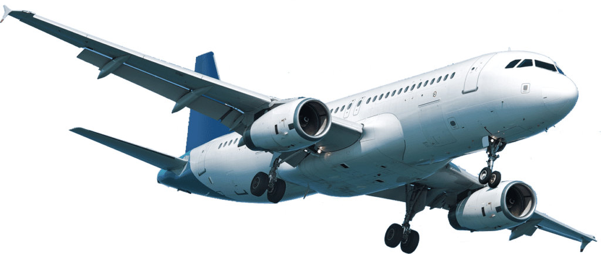

Na história da aviação existe controvérsia em quem, de fato, foi o pioneiro em alçar o primeiro voo. Mas, além disso, existe muita história e evolução ao passar dos anos, entre o século XV com o avião em forma de pássaro de Leonardo Da Vinci e o 14 BIS de Santos Dumonti No período da Primeira Guerra Mundial, pela primeira vez com utilização em grande escala, os aviões foram atualizados para carregar mais de um piloto e receberam motores com mais potência, ainda não decisivos na resolução da guerra, tiveram importante papel estratégico. Já o primeiro voo comercial aconteceu em janeiro de 1914 e durou apenas 23 minutos, com um passageiro. Porém, logo depois da Segunda Guerra Mundial é que a aviação comercial decolou e passou a ser feita em grande escala, com maior frequência e acessibilidade. Um dos primeiros aviões para essa finalidade foi o Boeing 707, em 1958, sendo o primeiro modelo a jato para passageiros. Além dele, em 1960 entraram em cena o Boeing 720, seguido pelo Douglas DC-8 e o Convair 880. Todos, nos EUA. Depois, outros modelos apareceram com grande potência e maior economia e ingleses, soviéticos, norte-americanos e franceses começaram investir no desenvolvimento de aviões cada vez mais modernos, maiores e com capacidade para centenas de pessoas. Neste época chegaram a ser desenvolvidos os primeiros modelos supersônicos, com velocidade que supera a do som. Porém, foi no final de 1970 que um dos modelos mais conhecidos até hoje foi criado, o Boeing 747. Além dele, surgiram os modelos Lockheed Tristar L01011 e o Douglas DC-10. O desafio, atualmente, está em desenvolver aviões mais velozes e econômicos, bem como mais sustentáveis ambientalmente. Modelos como o 737 Max, com capacidade para 172 passageiros e alcance de 7.130km se destacam neste novo ambiente, embora ainda sejam necessários muitos ajustes. Já o Cessna 408 SkyCourier tem lançamento comercial previsto para 2021, seguido de lançamentos para 2022 e 2023, com o novo A321XLR e 737 MAX 10. Sendo assim, a aviação pelo mundo todo está sempre em constante evolução, com necessidades cada vez maiores de encontrar meios de transportes mais versáteis e adaptados para as necessidades específicas do mercado da aviação porém com desafios de economia e sustentabilidade.
O transporte aéreo foi o que mais contribuiu para a redução da distância-tempo, ao percorrer rapidamente longas distâncias. Rápido, cômodo e seguro, o avião suplantou outros meios de transporte de passageiros a médias e longas distâncias. Este meio de transporte implica construção de estruturas muito especiais.
Nas últimas décadas, o transporte aéreo se tornou uma das principais opções para a locomoção de passageiros, inclusive para viagens nacionais. Esse fenômeno é consequência da queda dos valores das passagens aéreas, maior número de empresas atuando no mercado, aviões com capacidade de transportar mais pessoas, segurança, entre outros. Contudo, esse meio de transporte continua apresentando valores elevados. Em razão dos custos elevados e da capacidade reduzida para o transporte de carga, o avião não é o meio de transporte mais adequado para o deslocamento de mercadorias. Sendo assim, o transporte aéreo de cargas é vantajoso somente em determinadas situações, como no transporte de produtos perecíveis e no caso de urgência no tempo de entrega.
